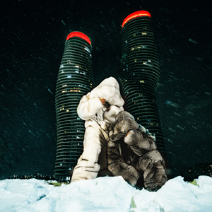
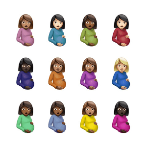
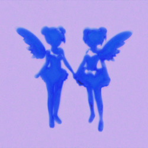
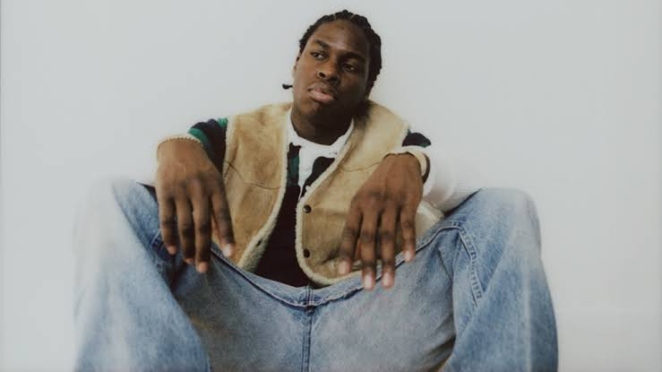
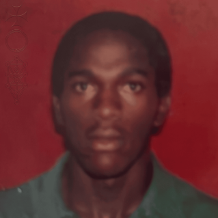
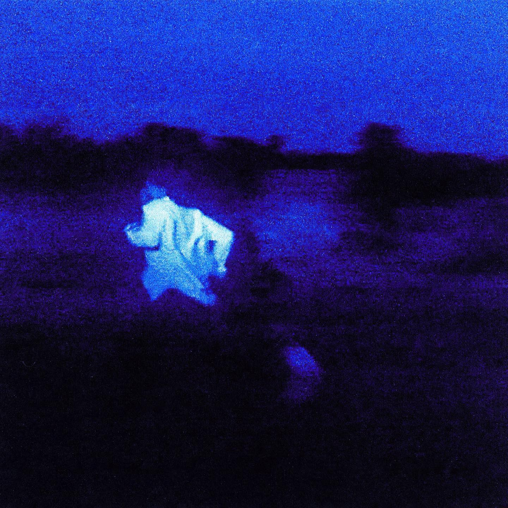
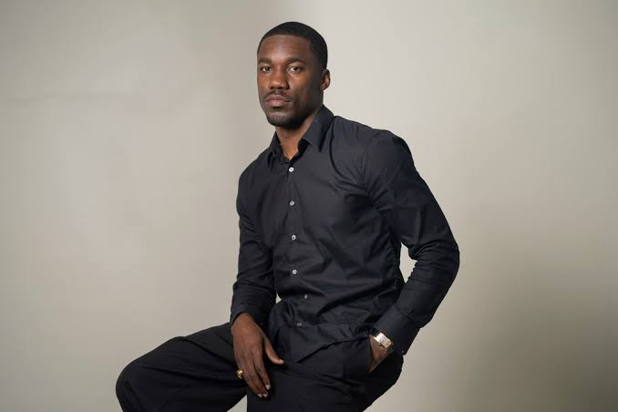
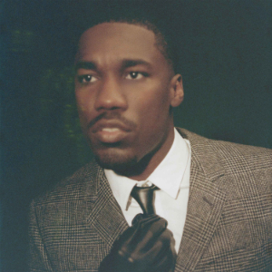
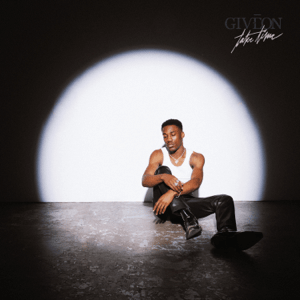

Drake is one of my favorite artists because he has a high variety of songs like pop, r&b and trap.



>>Click here to listen to Drake

Daniel Caesar is one of my favorite artists because of his calming voice. (I usually sleep to his music on road trips)


>>Click here to listen to Daniel Ceasar

Giveon is my favorite artist becuase of his unique voice and use of different instruments in his songs

